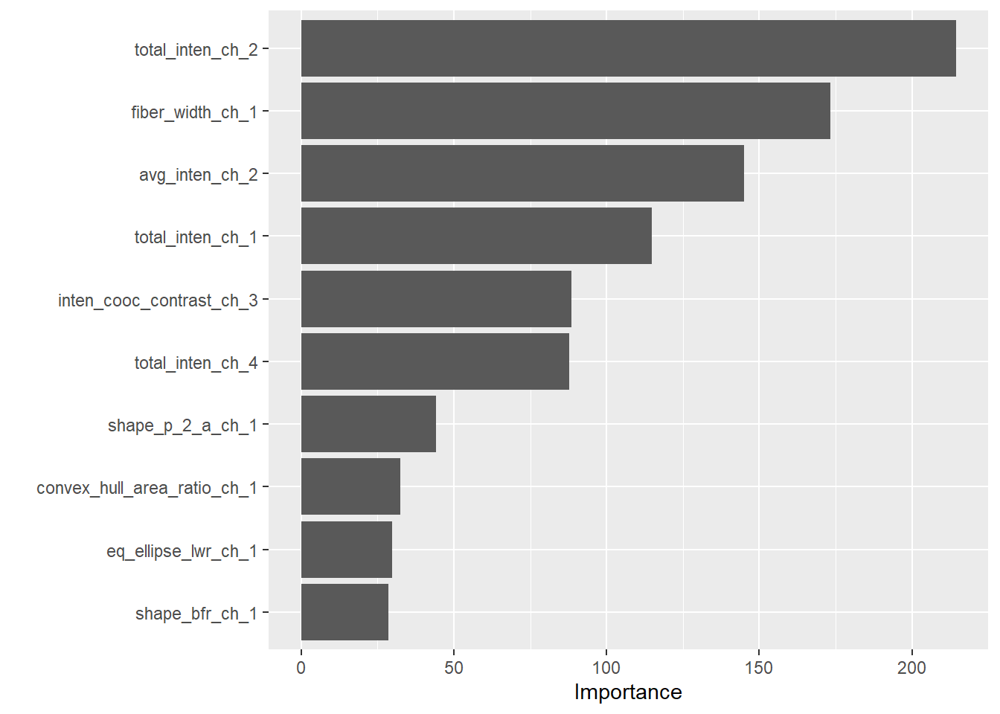
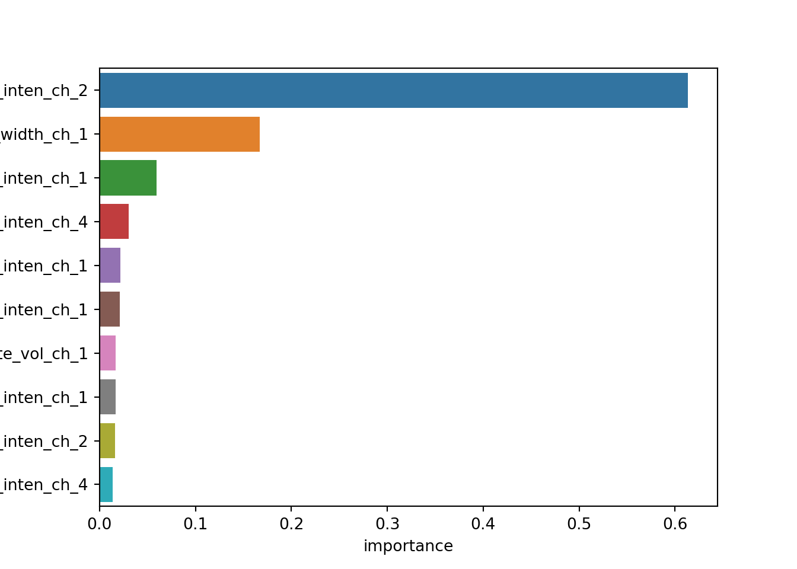

library(tidyverse)
library(tidymodels)
library(modeldata)
library(vip)
library(readr)
library(doParallel)skLearn and Tidymodels
LOAD PACKAGES AND LIBRARIES
R
Python
# General libraries
import pandas as pd
import numpy as np
import matplotlib.pyplot as plt
import seaborn as sns
# Specific functions
from joblib import parallel_backend
from sklearn.model_selection import train_test_split
from sklearn.preprocessing import FunctionTransformer
from sklearn.compose import make_column_transformer
from sklearn.tree import DecisionTreeClassifier
from sklearn.pipeline import make_pipeline
from sklearn.model_selection import GridSearchCV
from sklearn.metrics import make_scorer
from sklearn.metrics import accuracy_score
from sklearn.metrics import roc_auc_score
# Configure numpy random seed
np.random.seed(753)LOAD DATA
R
data(cells, package = 'modeldata')SPLIT DATA
R
cellSplit <- initial_split(cells, strata = class)
cellTrain <- training(cellSplit)
cellTest <- testing(cellSplit)Python
features = (r.cells
.drop('class', axis=1)
)
outcome = (r.cells['class'])
xTrain, xTest, yTrain, yTest = train_test_split(
features,
outcome,
test_size = 0.25,
stratify = outcome
)RECIPIES / PREPROCESSING
R
treeRec <-
recipe(
class ~., data = cells
) %>%
step_rm(case) %>%
step_string2factor(all_outcomes())Python
treePreProcess = make_column_transformer(
(FunctionTransformer(),
(features
.drop('case', axis=1)
.columns)
)
)MODEL SPECIFICATION
R
treeModel <-
decision_tree(
cost_complexity = tune(),
tree_depth = tune()
) %>%
set_engine('rpart') %>%
set_mode('classification')Python
Not necessary to specify the model on Python
WORKFLOW AND PIPELINE
R
treeWf <-
workflow() %>%
add_recipe(treeRec) %>%
add_model(treeModel)Python
treePipeline = make_pipeline(
treePreProcess,
DecisionTreeClassifier()
)TUNNING GRID
R
treeGrid <-
grid_regular(
cost_complexity(),
tree_depth(),
levels = 5
)Python
paramGrid = {
'decisiontreeclassifier__max_depth': [1, 4, 8, 11, 15],
'decisiontreeclassifier__ccp_alpha': [0.0000000001, 0.0000000178, 0.00000316, 0.000562, 0.1]
}CROSS VALIDATIONS CONSTRUCTION
R
set.seed(234)
kfold <- vfold_cv(cellTrain, v = 4)Python
For Python it is not necessary to create an object with CV information. But it is necessary to create an object with the metrics used on the model.
treeScorer = {
'roc_auc': make_scorer(roc_auc_score, needs_proba=True),
'accuray': make_scorer(accuracy_score)
}RUN GRID
R
ctrlG <- control_grid(parallel_over = "resamples")
cl <- makePSOCKcluster(4L)
registerDoParallel(cl)
tuneRes <-
treeWf %>%
tune_grid(
resamples = kfold,
grid = treeGrid,
control = ctrlG
)
stopCluster(cl)
registerDoSEQ()Python
treeTuner = GridSearchCV(
treePipeline,
paramGrid,
cv=4,
scoring=treeScorer,
refit='roc_auc'
)
with parallel_backend('threading', n_jobs=4):
treeRes = treeTuner.fit(xTrain, yTrain)BEST HYPERPARAMETERS
R
tuneRes %>%
show_best('roc_auc')# A tibble: 5 × 8
cost_complexity tree_depth .metric .estimator mean n std_err .config
<dbl> <int> <chr> <chr> <dbl> <int> <dbl> <chr>
1 0.0000000001 4 roc_auc binary 0.850 4 0.0162 Preprocesso…
2 0.0000000178 4 roc_auc binary 0.850 4 0.0162 Preprocesso…
3 0.00000316 4 roc_auc binary 0.850 4 0.0162 Preprocesso…
4 0.000562 4 roc_auc binary 0.850 4 0.0162 Preprocesso…
5 0.0000000001 8 roc_auc binary 0.846 4 0.0169 Preprocesso…bestParam <-
tuneRes %>%
select_best('roc_auc')
bestParam# A tibble: 1 × 3
cost_complexity tree_depth .config
<dbl> <int> <chr>
1 0.0000000001 4 Preprocessor1_Model06Python
bestParams = (pd.DataFrame(treeRes.cv_results_)
.sort_values('mean_test_roc_auc', ascending=False)
.rename(columns={
'param_decisiontreeclassifier__ccp_alpha': 'cost',
'param_decisiontreeclassifier__max_depth': 'max_depth'
}
)
.filter(['cost', 'max_depth', 'mean_test_accuray', 'mean_test_roc_auc'])
)
bestParams.head() cost max_depth mean_test_accuray mean_test_roc_auc
16 0.000562 4 0.798539 0.842096
6 0.0 4 0.798540 0.842047
11 0.000003 4 0.797881 0.841068
1 0.0 4 0.796556 0.839160
0 0.0 1 0.738437 0.779896FINALIZE WORKFLOW / PIPELINE
R
bestTree <-
treeWf %>%
finalize_workflow(bestParam) %>%
fit(data = cellTrain)Python
bestTree = treeRes.best_estimator_.named_steps['decisiontreeclassifier']
ct = treeRes.best_estimator_.named_steps['columntransformer']VARIABLE IMPORTANCE
R
bestTree %>%
pull_workflow_fit() %>%
vip()Warning: `pull_workflow_fit()` was deprecated in workflows 0.2.3.
Please use `extract_fit_parsnip()` instead.
featImp = (pd.DataFrame({'name': ct.transformers_[0][2]})
.assign(importance = bestTree.feature_importances_)
.sort_values('importance', ascending=False)
)
sns.barplot(x='importance', y='name', data=featImp.head(10))
plt.show()
FINAL VALIDATION
R
bestTree %>%
last_fit(cellSplit) %>%
collect_metrics()# A tibble: 2 × 4
.metric .estimator .estimate .config
<chr> <chr> <dbl> <chr>
1 accuracy binary 0.786 Preprocessor1_Model1
2 roc_auc binary 0.826 Preprocessor1_Model1Python
pd.DataFrame.from_records([
(name, scorer(treeRes.best_estimator_, xTest, yTest))
for name, scorer in treeScorer.items()
],
columns=['metric', 'score']) metric score
0 roc_auc 0.825436
1 accuray 0.774257